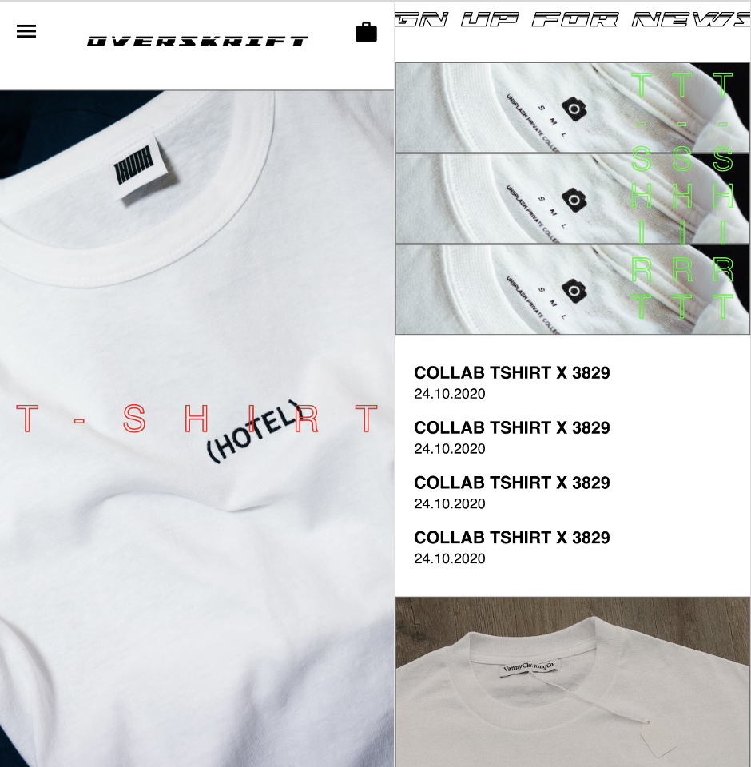
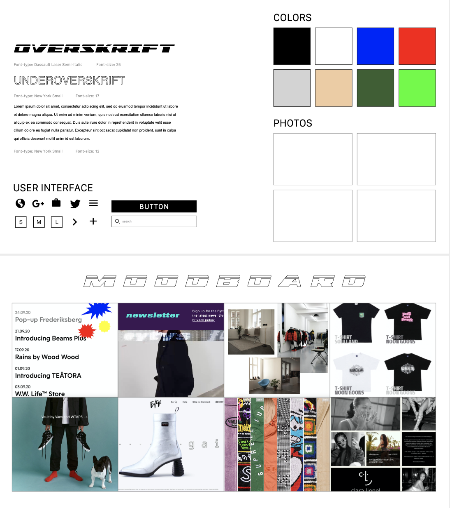

TEMA03
28/9/20 - 16/10/20

Prototype
I tema 3 blev vi introduceret for grundlæggende UX en grundlæggende forståelse for samspillet mellem brugere og brugergrænseflader. Vi startede med at lave en dybtgående desk research, her i form af analyser, artikler og relevanter websites. Herefter lavede vi både observation-, interview- og suveryresearch for at danne os et overblik over målgruppe og behov og dermed danne os en ide derudfra. Udfra research opstillede vi en prototype som igen kom til test. Her brugte vi en tænke højt test for at vurderer brugerens oplevelser med prototypen og rettede fejl derefter.
03.01.05 Idé
03.03.03 Pitch
Prototype
